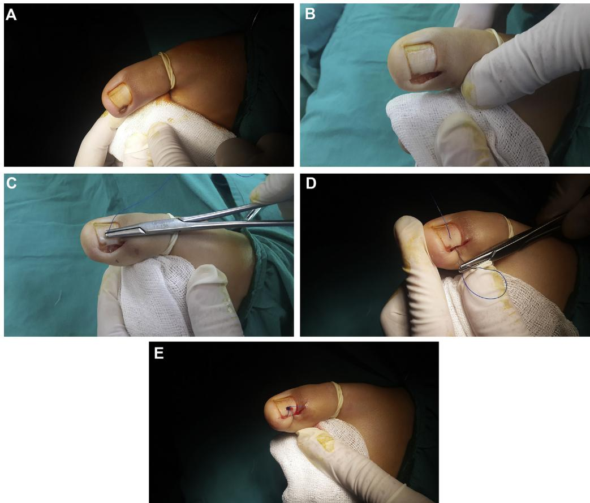
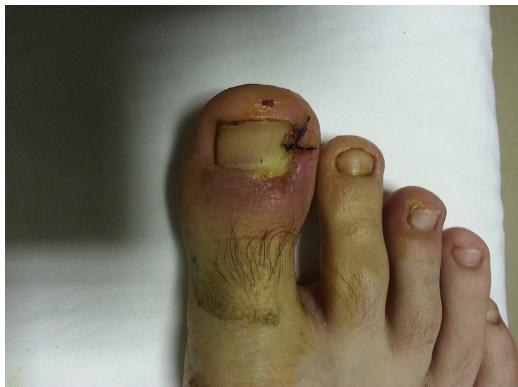
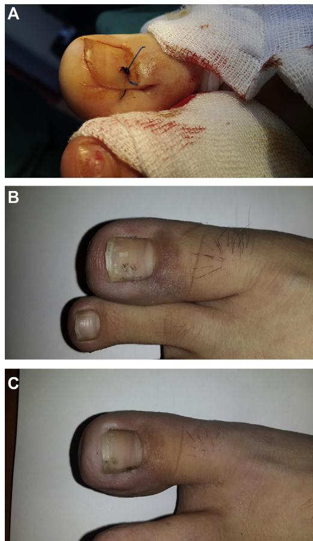

骨科门诊常见病，多发于 20-30 岁；主诉为足趾疼痛、脓性渗出、行走困难，严重影响工作与上学。
① 胶带牵拉 (Taping)
② 棉片填塞 (Packing)
③ 沟槽置入 (Gutter)
④ 指甲矫形器 (Nail brace)
① 部分拔甲 / 全拔甲
② 楔形切除 (Winograd)
③ 甲襞切除
④ 化学甲床切除术 (苯酚)
Winograd 报告「无复发」，但后续文献复发率 0–20%；苯酚法虽复发率低，但存在感染、酒精灼伤风险。目前对最佳术式仍无共识。
Recurrence rates after operation: 1.7% – 27% · 文献 [6,14]
传统缝合把甲襞皮肤留在甲板外侧，新生甲长出时仍可能嵌入软组织。
Uygur 2014 提出一种简单缝合：把甲襞皮肤固定在甲板下方，从源头减少甲-皮接触。
在 Winograd 术完成后，使用一种简单改良缝合（把甲襞皮肤塞入甲下）是否比传统缝合带来更低复发率与更高满意度？
每组 64（Cohen's d = 0.5, 80% 检验效能）
4 人迁居失访；Group I = 64 / Group II = 60
12 – 20 个月；术后 ≥ 12 个月电话随访
一患一术者；两位术者均参与两组手术
Winograd 术后用新缝合法关闭伤口。
n = 64 · 平均年龄 22.1 ± 8.4 岁
Winograd 术后用传统缝合法关闭伤口。
n = 60 · 平均年龄 23.9 ± 11.2 岁
甲沟轻度红肿、压痛，无渗出。保守治疗通常有效。
急性炎症、渗出、肉芽组织形成；需要手术干预。
慢性肉芽、肥厚性甲襞、反复感染；需口服抗生素 + 手术。
📊 本研究：I 期 23% · II 期 58% · III 期 18%（两组分布无统计学差异, p = 0.965）
其余手术步骤完全一致。这意味着研究问题非常纯净：单纯比较"缝皮"这一动作的不同。
把甲襞皮肤塞到甲板下面，新生甲板从皮瓣上方长出，丧失"再嵌入"的几何条件，从而降低复发率。

沿甲缘做纵切口，显露嵌甲侧甲板与炎性肉芽。
单丝尼龙线穿过皮瓣，向甲板下方拉拢固定，形成"皮瓣塞入甲下"的效果。
术后即刻：甲襞皮肤已物理性位于甲板下方，新生甲长出时不再嵌入。

📷 实物图来自原文 Fig.2 — 由土耳其 Ercis 州立医院足踝外科提供。
不要小看"皮瓣位置"这一细节 —— 在本研究里，它是降低复发的关键变量。
| 项目 | Group I（新法, n = 64） | Group II（传统法, n = 60） | p | |
|---|---|---|---|---|
| 年龄（岁） | Mean ± SD | 22.1 ± 8.4 | 23.9 ± 11.2 | 0.793 |
| 青少年（12–18 岁） | 28 (43.8%) | 27 (45.0%) | 0.889 | |
| 成人（≥ 19 岁） | 36 (56.3%) | 33 (55.0%) | ||
| 性别 | 男 | 33 (51.6%) | 50 (83.3%) | < 0.001 |
| 女 | 31 (48.4%) | 10 (16.7%) | ||
| Heifetz 分期 | I | 15 (23.4%) | 13 (21.7%) | 0.965 |
| II | 37 (57.8%) | 36 (60.0%) | ||
| III | 12 (18.8%) | 11 (18.3%) | ||
| 随访时间（月） | Mean ± SD | 14.5 ± 2.5 | 13.6 ± 2.4 | 0.132 |
年龄、Heifetz 分期、随访时间均无统计学差异。
传统组男性比例显著更高 (83.3% vs 51.6%, p < 0.001)。
进行了性别分层分析，结论稳健。
| 结局指标 | Group I | Group II | p（组间） | 青少年 | 成人 | p（年龄） | |
|---|---|---|---|---|---|---|---|
| 复工 / 复学时间（天） | Mean ± SD | 18.0 ± 4.8 | 15.8 ± 5.59 | 0.015 | 16.4 ± 4.9 | 17.4 ± 5.6 | 0.161 |
| 复发 n (%) | 9 (14.1) | 20 (33.3) | 0.011 | 13 (23.6) | 16 (23.2) | 0.953 | |
| 满意度 n (%) | 高 | 56 (87.5) | 44 (73.3) | 0.042 | 44 (80.0) | 56 (81.2) | 0.887 |
| 中 | 7 (10.9) | 9 (15.0) | 8 (14.5) | 8 (11.6) | |||
| 低 | 1 (1.6) | 7 (11.7) | 3 (5.5) | 5 (7.2) | |||
| 穿鞋时间（天） | Mean ± SD | 15.8 ± 3.6 | 16.4 ± 8.6 | 0.537 | 17.2 ± 7.8 | 15.2 ± 5.2 | 0.244 |
| 项目 | Group I 12–18 岁 (n=28) |
Group I ≥ 19 岁 (n=36) |
Group II 12–18 岁 (n=27) |
Group II ≥ 19 岁 (n=33) |
|---|---|---|---|---|
| 平均年龄（岁） | 15.53 | 27.22 | 15.14 | 31 |
| 复发例数 | 4 | 5 | 9 | 11 |
| 平均复发时间（天） | 76 | 52 | 48 | 80 |
| 需要抗生素治疗 | 2 | 3 | 5 | 4 |
| 需要二次手术 | — | — | 4 | 2 |
9 例出现疼痛 / 压痛 / 渗出：4 例自愈，5 例口服抗生素治愈。无一例再手术。
20 例复发患者中，4 例青少年 + 2 例成人共 6 例接受了二次手术。
本研究的"复发"定义偏宽：任何疼痛、压痛、渗出、棘状新生均算复发。因此新法组也有 9 例"复发"，但无人需要再手术。

少数患者有短暂疼痛压痛，但甲板形态良好，无需再次手术 —— 症状可逆。
新生甲再次嵌入甲襞，需再次手术切除，结构性问题。
未来研究应区分"症状性复发"和"结构性复发（需手术）"。
两组均鼓励尽早复工，但平均复工时间仍长于既往报告（既往 12–14 天，本研究 18 天）。可能与宣教力度不足有关，并非手术本身差异。
青少年 vs 成人的复发率（23.6% vs 23.2%, p = 0.953）与满意度均无差异。说明本研究差异来自缝合法，而非年龄。
仅改变缝合方式一个变量、其余步骤完全一致 —— 这种"单变量 RCT"是临床研究的好范式。
Our new technique was associated with greater satisfaction of, and lower recurrence rates in, youths and adults, but did not seem to reduce the times taken to return to work/school or to wear shoes once more.
Winograd 术后用改良缝合把甲襞皮肤置于甲板下方，相比传统缝合可显著降低复发、提高满意度，且不延迟穿鞋时间。